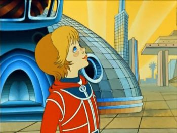

|

«Приключения Алисы» — цикл, серия книг Кира Булычёва в жанре фантастики для детей, подростков и взрослых, описывающих приключения Алисы Селезнёвой. Книги цикла писались автором на протяжении нескольких десятилетий, начиная с 1965 года (повесть «Девочка, с которой ничего не случится») и заканчивая 2003 годом («Алиса и Алисия»). Точного порядка книг в серии по времени описываемых в них событий нет, хотя некоторые исследователи предпринимали попытки ранжировать книги серии по предполагаемому возрасту Алисы в каждой из них.
Действие цикла происходит в научно-фантастическом будущем конца XXI века. Главным героем является Алиса Селезнёва, «девочка с Земли», дочь профессора биологии и директора зоопарка КосмоЗоо Игоря Селезнева. Каждая из повестей посвящена какому-либо отдельному её приключению в космосе, на Земле, в прошлом или даже в сказочном мире. Ряд книг был экранизирован.
По словам Булычёва, цель его сериала
«...найти пути к детской литературе, которая была бы адекватна поколениям детей, взращённых телевизором, а потом и компьютером.»
Оформлением цикла занимались многие художники, но в основном известны иллюстрации Евгения Мигунова.
Временная последовательность описываемых в книгах цикла событий:
Официальной временной последовательности у повестей не существует.
Исследователь биографии Алисы Селезнёвой Андрей Бусыгин, проанализировав все романы и повести о ней, смог определить приблизительную хронологию и привязать события, происходившие в них, к датам будущего:
• Девочка, с которой ничего не случится: 2083—2086
• Заповедник сказок: весна 2087
• Козлик Иван Иванович: весна 2087
• Путешествие Алисы: лето 2088
• Второгодники: осень 2088 — весна 2089
• Остров ржавого лейтенанта: июнь 2089
• День рождения Алисы: осень 2089
&nbnbsp;• Лиловый шар: зима 2089—2090
• Пленники астероида: июль 2090
• Сто лет тому вперёд: апрель 2091
• Миллион приключений: весна — лето 2091
• Узники «Ямагири-Мару»: весна 2092
• Конец Атлантиды: весна 2092
• Гай-до: июль 2092
• Город без памяти: август 2092
• Алиса и крестоносцы: сентябрь 2092
Данная датировка, разумеется, не бесспорна, и в некоторых случаях противоречит сказанному в самих книгах. Например, в «Городе без памяти» прямо указывается что с конца «Гай-до» прошёл год, а Алиса с Пашкой не смогли навестить Гай-до из-за событий «Конца Атлантиды».
Все книги про Алису Селезнёву во временном (смысловом) порядке:
• Девочка, с которой ничего не случится.
• Ржавый фельдмаршал.
• Путешествие Алисы.
• День рождения Алисы.
• Сто лет тому вперед.
• Пленники астероида.
• Заповедник сказок.
• Козлик Иван Иванович.
• Лиловый шар.
• Миллион приключений.
• Гай-до.
• Узники «Ямагири-мару».
• Конец Атлантиды.
• Город без памяти.
• Гость в кувшине.
• Подземная лодка.
• Алиса и крестоносцы.
• Золотой медвежонок.
• Война с лилипутами.
• Излучатель доброты.
• Сыщик Алиса.
• Планета для тиранов.
• Опасные сказки.
• Дети динозавров.
• Привидений не бывает.
• Алиса и чудовище.
• Секрет чёрного камня.
• Вампир Полумракс.
• Звёздный пес.
• Сапфировый венец.
• Заколдованный король.
• Алиса и Алисия.
• Королева пиратов на планете сказок.
• Колдун и Снегурочка.
• Алиса на планете загадок.
• Алиса и дракон.
• Алиса и притворщики.
• Алиса на живой планете.
• Второгодники.
• Это ты, Алиса?
• Настоящее кино.
• Клад Наполеона.
• Чудовище у родника.
• Вокруг света за три часа.
• Это вам не яблочный компот!
• Алиса в Гусляре.
• Уроды и красавцы.
• Древние тайны.
• Пашка-троглодит.
• Чулан Синей Бороды.
• Драконозавр.
• Принцы в башне.
Экранизации:
1. Тайна третьей планеты — полнометражный мультипликационный фильм Романа Качанова по мотивам повести Кира Булычёва «Путешествие Алисы» («Алиса и три капитана», «Девочка с Земли») из цикла Приключения Алисы.
2. Гостья из будущего — советский детский пятисерийный телевизионный художественный фильм, снятый на киностудии им. Горького в 1983—84 годах кинорежиссёром Павлом Арсеновым по мотивам фантастической повести Кира Булычёва «Сто лет тому вперёд» (1977). Один из самых популярных детских художественных фильмов за всю историю советского и российского кинематографа, может считаться культовым.
3. Лиловый шар — советский детский художественный фильм, снятый в 1987 году режиссёром Павлом Арсеновым по мотивам повести Кира Булычёва «Лиловый шар» из цикла «Приключения Алисы». Второй фильм Павла Арсенова (после «Гостьи из будущего») с Наташей Гусевой в главной роли.
4. Остров ржавого генерала — фантастический детский художественный фильм, экранизация повести «Ржавый фельдмаршал» Кира Булычёва из цикла «Приключения Алисы» 1988. Первый из неосуществлённой серии экранизации фильмов про Алису, фигурирующей в первых титрах, которую часто путают с названием картины - 1000000 приключений
5. Узники «Ямагири-мару» — кукольный мультипликационный фильм режиссёра Алексея Соловьёва по мотивам повести Кира Булычёва «Узники „Ямагири-мару“» 1988.
6. День рождения Алисы — российский полнометражный мультипликационный фильм, выпущенный студией «Мастер-фильм» по одноимённой повести Кира Булычёва об Алисе Селезнёвой. Работа над фильмом была завершена 19 декабря 2008 года, премьера состоялась 12 февраля 2009 года, в прокате с 19 февраля 2009 года, вышел на DVD/Blu-Ray 12 марта 2009 года.
7. Компьютерный мультсериал «Алиса знает, что делать!» (2014)
С 2009 года в производственном аду находится фильм «Приключения Алисы. Пленники трёх планет», фантастический фильм по мотивам произведений Кира Булычёва из цикла детских книг «Приключения Алисы». Снимать фильм должен режиссёр Олег Рясков, поставивший до этого телесериал «Александровский сад» и фильм «Слуга государев». Роль Алисы Селезнёвой должна исполнить актриса Дарья Мельникова, известная по телесериалу «Папины дочки».
Бюджет фильма составлял примерно 10 млн $. Ответственным за создание компьютерных эффектов был Павел Донатов, работавший до этого над спецэффектами для фильмов «9 рота» и «Обитаемый остров».
Съёмки нескольких сцен прошли в июле 2008 года, из которых был смонтирован тизер. Начало основного съёмочного периода назначено на февраль 2009 года. С января 2009 года работа над фильмом заморожена на неопределённый срок.
За рубежом также были сняты несколько фильмов об Алисе:
• Болгария
«Девочка, с которой ничего не случится», «Бронтя», «Наш Человек в прошлом». Короткометражные телефильмы в составе передачи "Спокойной ночи, дети". Каждый длится около 10 мин. Сняты в 1980-81 гг.
• Польша
«Девочка, с которой ничего не случится» (Dziewczynka, której nigdy nie zdarzy się nic złego). Цветной телеспектакль, созданный по одноимённому циклу рассказов в 1994 год. Длительность 34 мин. Автором сценария выступил Кир Булычев (Kir Bułyczow), перевод и адаптация Ирены Левандовской (Irena Lewandowska). Режиссёр: Агнешка Глиньская. Оператор: Гжегож Кучеришка (Grzegorz Kuczeriszka). Сценограф: Анна Зайтц-Вихлач (Anna Seitz-Wichłacz). Композитор: Марек Недзелько (Marek Niedzielko). Звукооператор: Анджей Богданович (Andrzej Bohdanowicz). Роли исполняют: Алиса — Ягода Стах (Jagoda Stach), профессор Селезнев — Кшиштоф Строиньский (Krzysztof Stroiński), ведущий — Дорота Ляндовская (Dorota Landowska), Тутексы — Кристина Сенкевич (Krystyna Sienkiewicz) и Ян Коциняк (Jan Kociniak), Шуша — Яцек Брацяк (Jacek Braciak), Бронтя — Януш Марцинович (Janusz Marcinowicz), Марсианин — Генрик Биста (Henryk Bista), Учёный — Томаш Тараскевич (Tomasz Taraszkiewicz).
• Словакия
«Тайна трёх капитанов» (Záhada trí kapitánu), снятый по повести «Путешествие Алисы» в 1990 году. Цветной фильм-спектакль в трёх частях, продолжительностью 76 мин. Авторы сценария: Кир Булычев (Kir Bulychyov), Анна Юраскова (Anna Jurásková). Режиссёр: Ян Бонавентура (Jan Bonaventura). Роли исполняют: Алиса — Клара Яндова (Klára Jandová), профессор Селезнев — Олдрих Визнер (Oldrich Vízner), в остальных ролях: Радка Ступкова (Radka Stupkova), Петр Коска (Petr Kostka), Петр Лепса (Petr Lepsa), Вит Песина (Vit Pesina), Михал Таловский (Michal Tálovský), Милан Кобера (Milan Kobera), Илона Йироткова (Ilona Jirotkova).
|